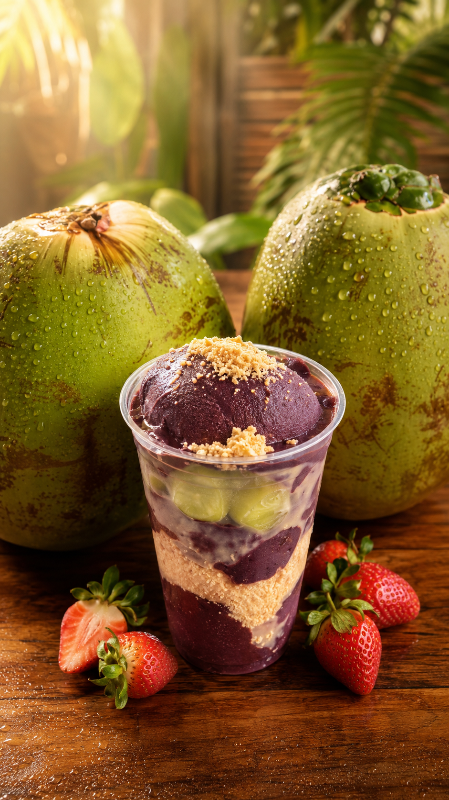
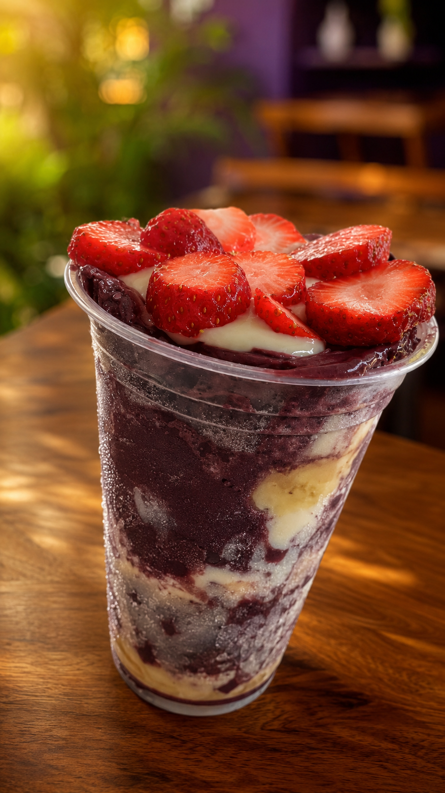
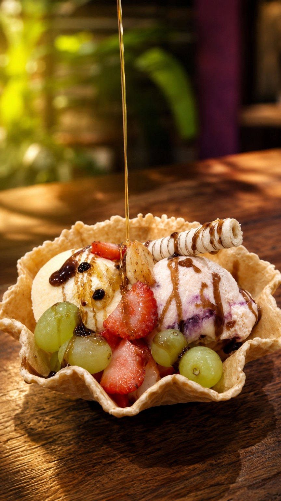
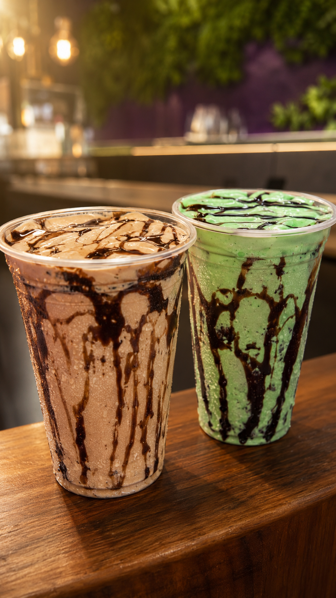

Açaí no copo
Açaí, coco & morango
Combinação tropical, cremosa e fotogênica. Daquelas que vendem antes da legenda terminar.
Quero esseCada colher é um momento: açaí cremoso, sorvetes, milk shakes, casquinhas e combinações bonitas para pedir no WhatsApp ou curtir na loja.
A Açaí São Marcos une aquela sensação de bairro acolhedor com apresentação caprichada: copos bonitos, frutas, caldas, casquinhas e sobremesas geladas que dão vontade antes mesmo do primeiro gole.

Produtos em destaque para valorizar a marca e facilitar a decisão do cliente. Valores e disponibilidade são confirmados pelo WhatsApp.

Combinação tropical, cremosa e fotogênica. Daquelas que vendem antes da legenda terminar.
Quero esse
Crocante, cremosa e com visual de sobremesa premium. Perfeita para aquele desejo rápido.
Pedir no WhatsApp
Gelado, encorpado e com aquele visual que dá vontade de chamar a galera.
Ver saboresAçaí, sorvete, casquinha, milk shake ou sobremesa gelada.
Frutas, cremes, granola, caldas e combinações para deixar com sua cara.
Confirme sabores, tamanhos, valores e combine retirada ou entrega.
Não é só sobre matar a vontade. É sobre fazer uma pausa no dia, escolher algo gelado, bonito e gostoso, e transformar um momento comum em um pequeno ritual.
“Açaí que derrete na língua, não na mão.”Pedir agora
Estamos no bairro São Marcos, em Valinhos. Chame no WhatsApp ou trace sua rota para visitar a loja.
Endereço: Rua Claudemires dos Santos, nº 82
São Marcos, Valinhos/SP • CEP 13272-821
WhatsApp: (19) 99128-8849
Chama no WhatsApp, pergunta os sabores do dia e peça do seu jeito.